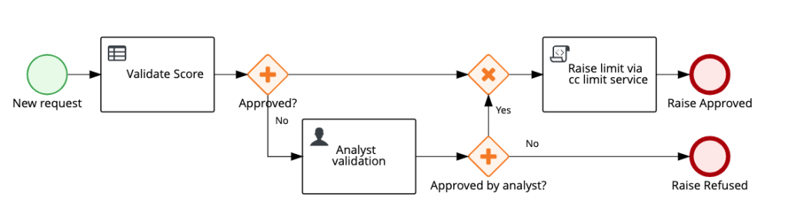
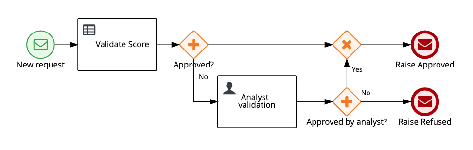
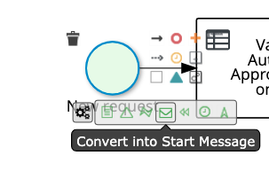
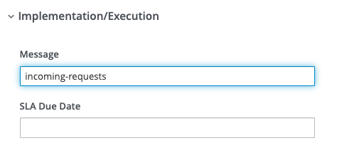
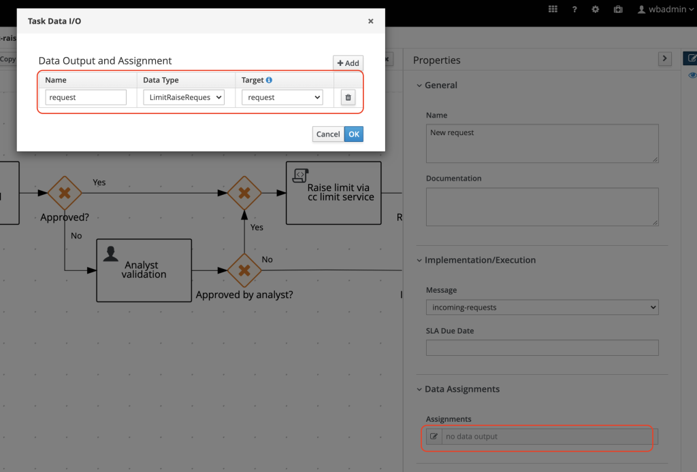
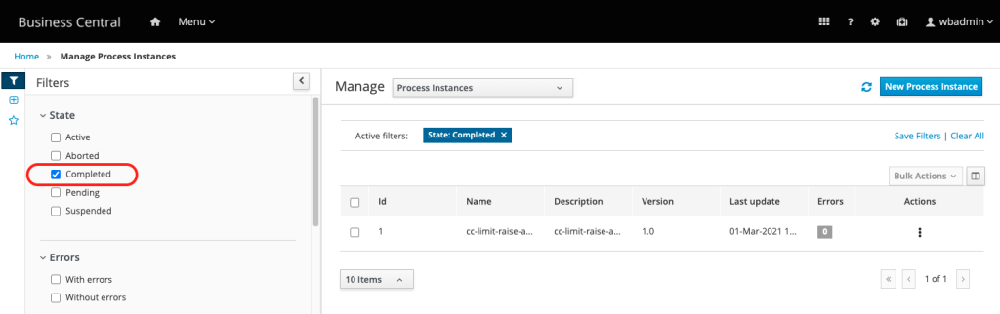
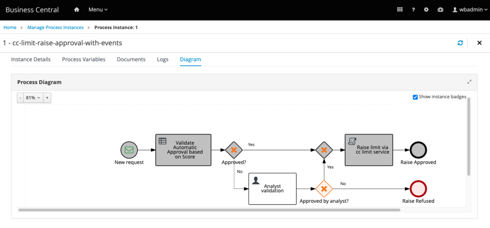

Starting business processes using Kafka events
Let’s check how we can model a business process, using the BPMN standard, that can react to events. Whenever a new event is published in a specific Kafka topic, a new process instance should be started. We’ll also check how to configure the project and environment in order to achieve these goals.
Getting Started
To get started we should create, deploy and test an event-driven process application.
1. Preparing your environment
The samples described in this guide were created using the following technologies:
INFO: This feature was released in this specific jBPM and RHPAM version. To achieve this post’s goals, you must use the mentioned versions or higher. If you don’t know how to install jBPM locally, take a look at: Getting Started with jBPM.
1.1. Preparing your Kafka server and topics
Event-driven processes interacts with other services via event platforms, more specifically in our case, Kafka topics. In this application, our process needs interacts with three topics: “incoming-requests“, “requests-approved” and “requests-denied“.
Let’s now setup a Kafka environment and create these three topics. We will use Strimzi and docker compose to help us get up and running faster.
INFO: This guide focus is not Kafka, therefore the following steps are straightforward. If you need more details about the upcoming commands please refer to this post: Bootstrapping Kafka and managing topics in 2 minutes.
First, clone the project that contains the docker-compose file we’ll use to start the Kafka services. Next start the services. Check the commands below:
git clone https://github.com/hguerrero/amq-examples.git cd amq-examples/strimzi-all-in-one/ docker-compose up
Open a new tab in your terminal, access the cloned project folder (amq-examples/strimzi-all-in-one/) and create the three topics:
docker-compose exec kafka bin/kafka-topics.sh --create --bootstrap-server localhost:9092 --replication-factor 1 --partitions 1 --topic incoming-requests docker-compose exec kafka bin/kafka-topics.sh --create --bootstrap-server localhost:9092 --replication-factor 1 --partitions 1 --topic requests-approved docker-compose exec kafka bin/kafka-topics.sh --create --bootstrap-server localhost:9092 --replication-factor 1 --partitions 1 --topic requests-denied
Now that we have the three topics ready to be used as our communication layer between services and our process, we can start working on the process definition.
The use case and the shift to an event-driven process application
Our use case will be the automation of a credit card limit raise approval process. Most card issuers allow customers to request an increased credit limit through their websites, mobile apps or over the phone. Let’s consider we need to deliver this automation for a bank that wants to achieve a similar use case within an event-driven architecture.
TIP: We’ll simplify the business logic of this use case to give focus to the eventing features and how you can use it.
The existing process is started via REST. It has a step for automatic request validation using DMN, and if the request not approved, it goes to a manual analysis. If approved, the service responsible for updating the cc limit is invoked via REST (the diagram only represents this REST call with a script task since this is not relevant for this guide’s scenario). Finally, the process ends either with an approved or denied request.

Image 1: Process v1. The process starts based on a rest call or JAVA API invocation. Services involved in the process are invoked via rest.Now, with the architecture shift, the service responsible for increasing the credit card limit should not be invoked via REST anymore. The external service now listens to the topic “request-approved” in order to track when to execute the limit raise. The business process should get started based on events, and whenever the process finishes, it should post a message to a specific topic depending on whether the request was approved or not.
Notice how the process below can achieve the same goals, using an event-driven strategy:

Image 2: Process v2. Whenever a new event happens in a topic, a new instance will be triggered. Depending on how this process ends, an event is published in a different topic, therefore, different services can react based on the approval status.In this strategy we have a resilient way of communication between services where the broker is responsible for storing and providing the events. Adding to that, the tech team can evolve the solutions by using the features available in Kafka itself, like the possibility to replay all the events that happened in a specific time, in chronological order.
2. Enabling the jBPM (RHPAM) Kafka Extension
To enable Kafka capabilities in the KIE Server (engine) we need to use system properties in the runtime environment. You can enable it both for SpringBoot and WildFly (a.k.a. jBoss) based deployments. See below the command that uses the jboss-cli.sh (or .bat) script to add the system property in WildFly, and, restart it.
TIP: When adding new system properties to WildFly or jBoss EAP, it’s necessary to restart it to have the new system properties activated.
INFO: There are more options in jBPM to customize the Kafka address, topic names, etc. In our case, we’re using the default Kafka address, which is, localhost:9092. More customization information can be found in the official Red Hat product documentation: Configuring a KIE Server to send and receive Kafka messages from the process.
With WildFly or EAP up and running, you can enable the Kafka extension in the KIE Server by executing the commands below:
$ $JBOSS_HOME/bin/jboss-cli.sh -c [standalone@localhost:9990 /] /system-property=org.kie.kafka.server.ext.disabled:add(value=false) [standalone@localhost:9990 /] :shutdown(restart=true)
We’re now ready to start working on the process definition.
3. Starting processes using events
- First, import the existing project with process v1 in Business Central.
- Open the cc-limit-raise-approval process.
- The first step is to change the start event to a start message event:

Image 3: Convert start event to start message eventWhenever a customer do a new request (independently of the channel used) an event should be published on the “new-requests” topic. With that, a new process instance will be started whenever a new event is published in this topic.
- Configure the name of the Kafka topic in the starting message event.

Image 4: Configure the message with the same name of the topic it will listen to.- We want to receive the request contained in the event data. The engine provides automatic marshalling to help us mapping the input directly to a data object. The project has an object named “LimitRaiseRequest.java” which we will use to receive the incoming data. On the properties panel of the Start Message Event, configure the input data:

Image 5: Start message event configuration of the Input data- Save the process.
- Now, deploy the project to KIE Server so you can test it. You can use the deploy button available in Business Central.
- Open a new tab in the terminal, and access the “strimzi-all-in-one” project we’re using to interact with the Kafka service.
cd $PROJECTS_DIR/amq-examples/strimzi-all-in-one docker-compose exec kafka bin/kafka-console-producer.sh --topic incoming-requests --bootstrap-server localhost:9092 >
The producer service is now waiting for you to publish an event to the topic “incoming-requests“. To do so, simply input the following json data and hit enter: {"data" : {"customerId": 1, "customerScore": 250, "requestedValue":1500}}
> {"data" : {"customerId": 1, "customerScore": 250, "requestedValue":1500}}
- Now, in your browser, in Business Central, if you go to the Process Instances management page and filter by the Completed status, you should be able to see a process instance completed:

Image 6: Business Central. List of completed process instances in the monitored KIE Server.- Select the process instance you see, and next, go the the Diagram tab. You should see that the request was automatically approved.

Image 7: Process Instance Diagram. This process instance was started based on an event that happened in the topic configured in the message start event.You can now effectively handle the events that triggers business processes within an event-driven architecture. The next step is to learn how to emit events from within your process. The following post should bring you details on how to let the ecosystem know about key happenings of your business process.
This blog post is part of the seventh section of the jBPM Getting started series: Working with event-driven business processes.